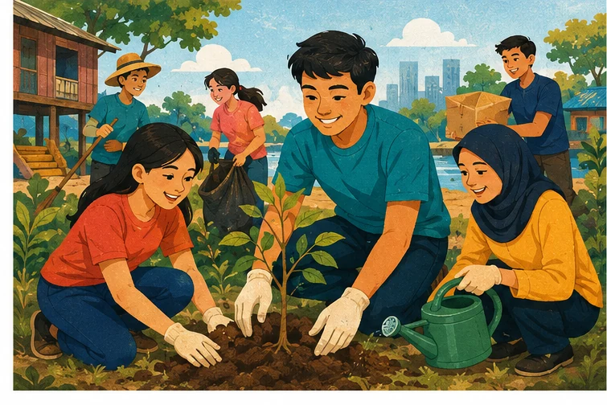

01 · Pronounce
recognise and practise vowel elision in fast speech
English 11
ASEAN and Viet Nam
Elision of vowels • ASEAN vocabulary • Gerunds
Three language tools for talking about ASEAN
recognise and practise vowel elision in fast speech
four key words and phrases about ASEAN cooperation
accurate sentences with gerunds as subjects and objects
Say each word naturally, then identify the weak vowel
Challenge: pronounce the words again without stressing the vowel in brackets.
Weak vowels may disappear before /l/, /n/ or /r/
the omission of a sound or syllable in fast, informal speech
Result: the spoken word may have fewer syllables than its spelling suggests.
Audio 28 • Pay attention to the omitted vowels
1–3| Word | Fast-speech form | Say it |
|---|---|---|
| history | hist(o)ry | 3 → 2 syllables |
| different | diff(e)rent | 3 → 2 syllables |
| tonight | t(o)night | 2 → 1 syllable |
Audio 28 • Pay attention to the omitted vowels
4–6| Word | Fast-speech form | Say it |
|---|---|---|
| correct | c(o)rrect | 2 → 1 syllable |
| police | p(o)lice | 2 → 1 syllable |
| dictionary | diction(a)ry | 4 → 3 syllables |
Audio 29 • Underline the words with elision
1–2Let’s find the correct answer!
We also provide mobile library services in rural areas.
Audio 29 • Underline the words with elision
3–4My family will move to a different country.
Please bring your dictionary to the history class.
Learn the meaning, pronunciation, word family and a useful collocation.
giao lưu văn hoá
Meaning and example/ˈkʌltʃərəl ɪksˈtʃeɪndʒ/ noun phrase
the sharing of traditions, ideas and knowledge between people from different cultures
The programme promotes cultural exchange among ASEAN students.
giao lưu văn hoá
Word family and collocation/ˈkʌltʃərəl ɪksˈtʃeɪndʒ/ noun phrase
culture (n) • cultural (adj) • exchange (n/v)
promote cultural exchange
các vấn đề hiện nay
Meaning and example/ˈkʌrənt ˈɪʃuːz/ noun phrase
important problems or topics that are happening and being discussed now
Young leaders discussed current issues such as climate change.
các vấn đề hiện nay
Word family and collocation/ˈkʌrənt ˈɪʃuːz/ noun phrase
current (adj) • currently (adv) • issue (n/v)
discuss current issues
sự đóng góp
Meaning and example/ˌkɒntrɪˈbjuːʃən/ noun

something that you give or do to help make an activity or project successful
Every volunteer made a valuable contribution to the project.
sự đóng góp
Word family and collocation/ˌkɒntrɪˈbjuːʃən/ noun
contribute (v) • contribution (n) • contributor (n)
make a contribution to
kỹ năng lãnh đạo
Meaning and example/ˈliːdəʃɪp skɪlz/ noun phrase
the abilities needed to organise and guide people towards a common goal
Team projects help students develop leadership skills.
kỹ năng lãnh đạo
Word family and collocation/ˈliːdəʃɪp skɪlz/ noun phrase
lead (v) • leader (n) • leadership (n) • leading (adj)
develop leadership skills
Write the four phrases and one useful collocation for each
| Word / phrase | Vietnamese | Useful collocation |
|---|---|---|
| cultural exchange | giao lưu văn hoá | promote cultural exchange |
| current issues | các vấn đề hiện nay | discuss current issues |
| contribution | sự đóng góp | make a contribution to |
| leadership skills | kỹ năng lãnh đạo | develop leadership skills |
Work individually, then compare with a partner
a abilities to organise people to reach a common goal
b sharing traditions and knowledge across countries
c important things that are happening now
d something given or done to help make something successful
Explain the key word that helped you decide
Use each phrase once
1–2cultural exchange • current issues • contribution • leadership skills
Communicating with people and managing teamwork well are important __________.
ASEAN has made a major __________ to peace in the region.
Use each phrase once
3–4cultural exchange • current issues • contribution • leadership skills
A __________ is the best way for young people to understand other countries’ values and ideas.
The aim of this meeting is to discuss __________ such as climate change and pollution.
Notice the grammar around each blank
Start with the core rule, then explore prepositions and verbs whose meanings change.
Look at their form and their job in each sentence
Travelling might satisfy your desire for new experiences.
Her dream job is teaching English.
My father’s work involves travelling around the region.
He apologised for not attending the meeting.
Form: verb + -ing
Apply the spelling rule before adding -ing
work → working
add -ing
make → making
drop -e
sit → sitting
double the final consonant
lie → lying
change -ie to -y
Core forms first; the perfect forms are useful extensions
Simple forms| Form | Structure | Example |
|---|---|---|
| Simple active | doing | She enjoys helping others. |
| Simple passive | being + past participle | He dislikes being interrupted. |
For this lesson, focus mainly on doing / not doing.
Core forms first; the perfect forms are useful extensions
Perfect forms and negation| Form | Structure | Example |
|---|---|---|
| Perfect active | having + past participle | She admitted having made a mistake. |
| Perfect passive | having been + past participle | He remembered having been invited. |
| Negative | not + gerund | Not attending was a mistake. |
Use a singular verb when the whole activity is one idea
Travelling around ASEAN
is
eye-opening.
SUBJECT
SINGULAR VERB
• Learning about other cultures helps us become open-minded.
• Not sleeping enough causes health problems.
Two separate activities → plural verb: Communicating with people and managing teamwork well are important.
It identifies or explains the subject
Her favourite activity
is
meeting new people.
subject
complement
My hobby is __________.
Pair work: decide which column each verb goes in. Then check together.
Pair work: decide which column each verb goes in. Then check together.
Pair work: decide which column each verb goes in. Then check together.
Pair work: decide which column each verb goes in. Then check together.
Copy the three lists into your notebook. Focus on the V-ing column.
V-ingenjoy • mind • dislike • feel like • can't help • fancy • detest • avoid • finish • postpone • keep • put off • give up • delay • admit • suggest • deny • consider • mention • imagine • discuss • practise • miss • take up • risk • involve • appreciate • escape
e.g. We enjoy taking part in ASEAN youth programmes.
Copy the three lists into your notebook. Focus on the V-ing column.
To V and bare Vwant • hope • decide • plan • agree • promise • refuse • manage
e.g. She decided to apply for the programme.
let (sb) • make (sb) • had better • would rather
e.g. Let me help you. · You'd better hurry.
After any preposition, the verb takes the gerund (V-ing) form
1 / 2e.g. Thank you for helping me with my project.
e.g. What is the purpose of holding this event?
After any preposition, the verb takes the gerund (V-ing) form
2 / 2e.g. She is interested in learning about ASEAN cultures.
Other prepositions: by • without • before • after • instead of
Pair work: Verb, Adjective or Noun + preposition? All of them are followed by V-ing.
Pair work: Verb, Adjective or Noun + preposition? All of them are followed by V-ing.
Prepositional to + V-ing — not an infinitive
1 / 2I look forward to hearing from you.
She is used to working in a team.
They are getting used to speaking English.
Also: contribute to • be accustomed to • be devoted to • when it comes to
Prepositional to + V-ing — not an infinitive
2 / 2Some people object to sharing personal data.
We are committed to protecting the environment.
Compare: She used to work in a team. (past habit) ≠ She is used to working in a team. (accustomed to it)
The whole phrase works as one noun unit
Organising a successful event requires leadership skills.
It’s no use / no good doing…
have difficulty / trouble doing…
spend / waste time doing…
be busy doing…
be worth doing…
there’s no point (in) doing…
Pair work: read the meaning. Is the verb followed by V-ing or to V? Then check together.
1–2a memory of a past action
I remember seeing this film when I was a child.
do something you need to do
Remember to lock the door when you go out.
Pair work: read the meaning. Is the verb followed by V-ing or to V? Then check together.
3–4fail to do something you planned
Oh no! I forgot to call my grandma yesterday.
not remember a past event (often: never forget)
I'll never forget winning my first English contest.
Pair work: read the meaning. Is the verb followed by V-ing or to V? Then check together.
5–6feel sorry about something you did
He regrets spending all his money on games.
be sorry to give bad news (formal)
We regret to tell you that the concert is cancelled.
Pair work: read the meaning. Is the verb followed by V-ing or to V? Then check together.
1–2end an activity
You should stop eating junk food.
pause in order to do something else
On the way to school, she stopped to help an old man.
Pair work: read the meaning. Is the verb followed by V-ing or to V? Then check together.
3–4make an effort to do something
I'm trying to improve my English pronunciation.
do something as an experiment to solve a problem
Can't sleep? Try drinking a glass of warm milk.
Pair work: read the meaning. Is the verb followed by V-ing or to V? Then check together.
1–2continue the same action
They went on dancing until midnight.
move on to the next action
After explaining the rules, the teacher went on to give examples.
Pair work: read the meaning. Is the verb followed by V-ing or to V? Then check together.
3–4intend to do something
Sorry, I didn't mean to break your pen.
involve; result in
Studying abroad means living far from your family.
Pair work: read the meaning. Is the verb followed by V-ing or to V? Then check together.
5–6need to be done (passive meaning)
My bike needs repairing.
need to do an action
We need to leave now or we'll be late.
Sometimes the meaning is similar; sometimes the grammar around the verb changes
Similar meanings and preferencesbegin • start • continue
It started raining. / It started to rain.
like • love • hate • prefer
I like reading. / I like to read before bed.
Sometimes the meaning is similar; sometimes the grammar around the verb changes
With or without an objectrecommend / advise / allow
+ V-ing: They recommend joining.
+ object + to-V: They advised us to join.
For this unit, master the core V-ing patterns first; use these as reference.
Keep the original meaning
1–21. It is more convenient for students to apply for ASEAN scholarships online.
→ __________ is more convenient for students.
2. My sister usually listens to music in her free time.
→ My sister’s hobby is __________ in her free time.
Keep the original meaning
3–43. Could you help me translate the documents for the workshop?
→ Do you mind __________ for the workshop?
4. They managed to start a youth programme in Southeast Asia.
→ They succeeded in __________ in Southeast Asia.
Keep the original meaning
55. Maria can’t forget the conference she participated in last year.
→ __________ was an unforgettable experience for Maria.
Check both the gerund form and the complete sentence
1–2Check both the gerund form and the complete sentence
3–4Check both the gerund form and the complete sentence
5Make sentences with gerunds; your partner says true or false
You enjoy travelling around the region.
Sorry, that’s not true. Your dream job is working for the AYVP.
You’re right! Now, it’s my turn again…
You enjoy… • Your favourite activity is… • You are interested in… • You dislike…
Teams write A or B and explain why
1 / 4Remember ___ your application tonight.
A sending · B to send
Teams write A or B and explain why
2 / 4As a possible solution, try ___ with your teammate.
A talking · B to talk
Teams write A or B and explain why
3 / 4We stopped ___ because the teacher entered.
A talking · B to talk
Teams write A or B and explain why
4 / 4She is interested in ___ ASEAN cultures.
A learning · B to learn
Two teams • 60 questions • Three in a row wins
Choose a square and put the verb in the correct form.
Correct: your mark goes on the square.
Wrong: the other team can steal the square.
Three in a row wins the round.
Unit 4 · ASEAN and Viet Nam · Language
Two teams stand in lines. Read the definition, run to the board and write the word.
The first correct answer gets 1 point.
Write one ASEAN phrase from today.
State one rule for using a gerund.
Write one true sentence about yourself using V-ing.
Be ready to share before you leave.